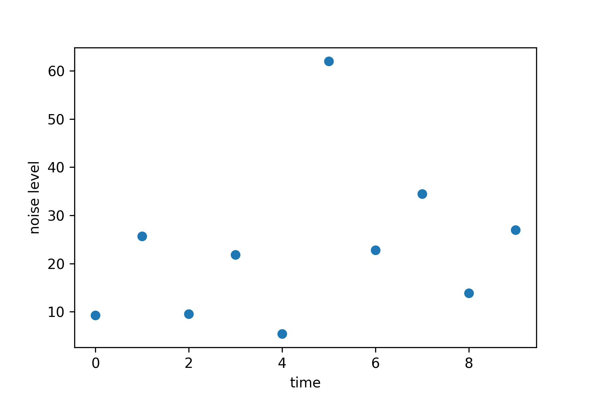

Fraud Detection
Past, Present, and Future
Dirk Hesse
Chief Data Scientist at AIA Science
@NotDirkHesse | dh@aiascience.com
Fraud!?
1
McAfee
We estimate that the likely annual cost to the global economy from cybercrime is more than $400 billion.
2
The Economist
Total global payment-card fraud losses were $11.3 billion in 2012, up nearly 15% from the prior year.
3
Gartner
The Internet of Things (IoT), which excludes PCs, tablets and smartphones, will grow to 26 billion units installed in 2020 [...].
4
Bruce Schneier
- IoT Teddy Bear Leaked Personal Audio Recordings
- Soon You'll Be Able to Hijack Weaponized Police Drones in Connecticut
5
The future might be a scary place.
6
Fraud Detection
|
|
|
7
Expert Systems

|
|
8
Why rules fail...
- Rigid.
- Hard to maintain.
- Hard to explain.
- Will only find what you're looking for.
9
Anomaly Detection
- We'll talk about four flavors.
- Outliers.
- Cluster analysis.
- Predictive models.
- Peer group analysis.
- Literature
- Practical Machine Learning: A New Look At Anomaly Detection
- Ted Dunning and Ellen Friedman
- Peer Group Analysis - Local Anomaly Detection in Longitudinal Data
- Richard Bolton and David Hand
- Practical Machine Learning: A New Look At Anomaly Detection
10
Example: Predicting machine malfunction.

11
The z Value
- Assume we have data x1,…,xN.
- Calculate the mean ¯¯¯x=1N∑ixi.
- Calculate the standard deviation σ=√1N∑i(xi−¯¯¯x)2
- Calculate the z-value zi=(xi−¯¯¯x)/σ.
- Flag everything with z>zmax as anomaly.
- Even better: Use median and median absolute deviation from the median.
12
The Normal Distribution
13
Feature Engineering
14

15
Features are Your Friend
- Take your time finding good features.
- Good features beat a good model every time!
- Explore correlations.
- Talk to experts!
16
Take your time!

| Give me six hours to chop down a tree and I will spend the first four sharpening the axe. |
17
Feature Engineering
18
Example Data: BABS

|
|
19
The Need For Clustering
- There might be natural variations in data.
- Weekend vs. weekday spending patterns.
- Heart rhythms at rest vs. during sport.
- Enter: Cluster methods.
20
Clustering 101
- Needed: Some measure for distance between measurements.
- I.e. a metric.
- Objective: Find k clusters of points that are close together.
- For some value of 'close'.
- Some methods find k automatically.
- Most methods need it as input.
- Now identify points not fitting in.
21
Not fitting in ...

22
Clustering

23
Clustering for fraud detection
- Calculate the per-cluster standard deviation σl= ⎷1Nl∑i;C(xi)=l∥xi−μl∥2.
- And the per-cluster z-value zi=xi−μC(xi)σC(xi).
- Classify points as an anomaly if zi>zmax.
24
Predictive modeling for fraud detection
... in time series data.
25
Anomalies as prediction error.
- Build a model that predicts y(t)≈f(x).
- E.g. using autoregressive modeling.
- x(i)(t)=y(t−Δi).
- Estimate the mean modeling error μ=E[y−f]≈0.
- Estimate the variation σ2=E[(y−f−μ)2].
- Calculate a z score.
- Flag anomalies if z>zmax.
26
Predicting Time Series
27
z values

28
Peer Group Analysis
- Used for e.g. time series data.
- Define train period.
- Find parts of time series with similar behavior.
- Group those together.
- Calculate in-group z−score.
- Very similar to k-nearest neighbors.
29

30
The Future
- Lots of focus on (social) networks.
- Who is friends with whom?
- Who talks to whom?
- Easy to catch main players e.g. in Enron email data.
- Useful tools: Graph databases (e.g. Neo4j).
- Wide field, out of scope for talk.
31
Questions?
32
Finding k

33